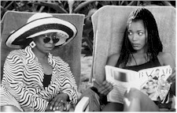

Contents | Features | Reviews | Books | Archives | Store |
 |
|
| Movie Credits | Buy It! |
How Stella Got Her Groove Back
Review by Elias Savada
Posted 14 August 1998
| Directed by Kevin
Rodney Sullivan. Starring Angela Bassett, Taye Diggs, Written by Terry McMillan and Ron Bass. |
Very much a companion piece to 1995’s Waiting to Exhale, brought to you by the same novelist (Terry McMillan) and co-scripters (McMillan and Ron Bass), although director Forest Whitaker has been replaced by feature freshman Kevin Rodney Sullivan, a vet of many years as a television actor (Happy Days) and small screen hyphenate (Knightwatch, which no one remembers because it aired opposite The Cosby Show), How Stella Got Her Groove Back has some awkward pacing problems at the hands of a novice helmer, but the strong material and the fine delivery, especially by Whoopi Goldberg, more than make up for the directorial inconsistencies. In fact, when Goldberg is on-screen, her every utterance makes this romantic drama and romantic Comedy drama. That’s big C, little o. It’s a joy to watch her as she bounces one good bon mot after another off the rest of the cast. It’s a let-down when she’s out of the picture.
In a relationship reminiscent of Bette Midler and Barbara Hershey in Beaches (1988), Goldberg plays Delilah, best friend to groove-less Stella Payne (Angela Bassett), their camaraderie expanding from a trans-continental telephonic relationship to a rum-raising tete-a-tete when the two ladies joint together for a fortnight of debauchery (for the aptly-named Delilah) and love (for Stella) in Jamaica. Stella, a 40-year old high-powered workaholic, takes a break from her brokerage firm chores, ships her 11-year-old son Quincy (Michael J. Pagan) off to her ex-husband, and imagines herself the star of a lusty travelogue infomercial (and the tropical paradise is shown to good advantage throughout the rest of the film, too). Between the dreary rain pounding outside her drop-dead Architectural Digest home in the San Francisco hills and the badgering of her younger sisters Vanessa (Regina King, best known for her role as Cuba Gooding, Jr.’s wife in Jerry Maguire), a loud, ballsy, ambulance-driving paramedic who provides Stella with some much-needed support, and Angela (Suzzanne Douglas), a pregnant vanity case that no sibling deserves, Stella casts off her custom-tailored business suits and pops her fat-free body into eye-catching eyewear, underwear, and swimwear by Calvin Klein.
Handsome local hunk Winston Shakespeare (Taye Diggs) catches Stella’s eye (and other parts of her anatomy) and she his as the sun frolics over the lush island scenery backdropping their budding romance. Her inner thoughts contradict her spoken words in their first meeting, but the hormones soon kick in behind some mosquito netting in Stella’s boudoir. Their affections grow too quickly as the sultry co-stars get acquainted and then some. The only hang-up is that Winston is half Stella’s age and the robbing-the-cradle situation weighs heavier on her than a San Francisco fog rolling in over the Bay. She grapples with this baby-snatching problem while both Winston and Delilah try to ease Stella’s pain--her self-doubts about her new relationship, her job, and her family. A tall order indeed. After all, can she really fall for someone who eats cocoa puffs, watches Booty Call, and is so young he hasn’t had time to have his heart broken. Nearly an hour into the film, shuttle diplomacy moves the action quickly back and forth between the Caribbean setting, New York, and San Francisco (courtesy of American Airlines, obviously a proud sponsor and agreeable contributor to production expenses). Love blossoms, matures, and nearly wilts as the movie tries to come to grips with the cradle-to-college generation difference (inspired by author McMillan’s real-life love affair with a Jamaican man a generation her junior), at points nearly stopping the film dead, particularly in one unintentionally funny shower sequence. I kept thinking to myself that this titillating scene needed an exorcist’s touch.
The film has a too-neat ending that rings only half-true. Will Stella return to a $275,000 job or put the fun back in her life building furniture (possible motto: "If you build it they will buy."), a precious but forgotten pastime she has forsaken for a life scrambling for multi-million-dollar deals. Winston, who had put off plans for medical school (heck, he’s 20, what about the rest of college first!) gets a wildly unbelievable line from his paramour as the end credits roll.
But, aside from these errors, the film’s life-affirming aura will certainly translate into a mid-August chick-flick and fine date entertainment for couples young and old (no matter what the age contrast). The soundtrack by Michel Colombier is hip, with a steady rhythm-and-blues and reggae undertow. It should be a popular seller at your local music store. In another marvel of packaging and promotion "executive soundtrack producers" (Grammy winners Jimmy Jam and Terry Lewis) are among the more prominent credits Hollywood creatives dreamt up for this production.
In lesser but entertaining roles are Richard Lawson (Jack) and Barry "Shabaka" Henley (Buddy) as two un-hip and suave-be-damned losers among men that adhere themselves to Delilah as Stella finds love at poolside. Guess Delilah left her bug-repellant at home, but her oversight is to our advantage. Jack is a lean machine (his necklace proclaims "BODY SLAM") with a stuttering problem. Buddy is a overweight party animal that nearly does a full monty to the hilarious delight of the audience. Two small parts filled with plenty of gusto.
Contents | Features | Reviews | Books | Archives | Store
Copyright © 1999 by Nitrate Productions, Inc. All Rights Reserved.